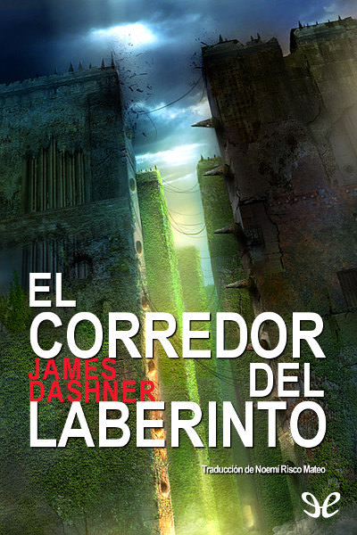

El Corredor del Laberinto - James Dashner
1. El Corredor del Laberinto

Sipnosis
MEMORIZA, CORRE, SOBREVIVE.
«Bienvenido al bosque. Verás que una vez a la semana, siempre el mismo día y a la misma hora, nos llegan víveres. Una vez al mes, siempre el mismo día y a la misma hora, aparece un nuevo chico como tú. Siempre un chico. Como ves, este lugar está cercado por muros de piedra... Has de saber que estos muros se abren por la mañana y se cierran por la noche, siempre a la hora exacta. Al otro lado se encuentra el laberinto. De noche, las puertas se cierran... y, si quieres sobrevivir, no debes estar allí para entonces».
Todo sigue un orden… y, sin embargo, al día siguiente suena una alarma. Significa que ha llegado alguien más. Para asombro de todos, es una chica. Su llegada vendrá acompañada de un mensaje que cambiará las reglas del juego.
¿Y si un día abrieras los ojos y te vieses en un lugar desconocido sin saber nada más que tu nombre?
Cuando Thomas despierta, se encuentra en una especie de ascensor. No recuerda qué edad tiene, quién es ni cómo es su rostro. Sólo su nombre.
De pronto, el ascensor da un zarandeo y se detiene. Las puertas se abren y una multitud de rostros le recibe. «Bienvenido al Claro —dice uno de los adolescentes—. Aquí es donde vivimos. Esta es nuestra casa. Fuera está el laberinto. Yo soy Alby; él, Newt. Y tú eres el primero desde que mataron a Nick».
Reseña
El corredor del laberinto de James Dashner es una lectura cargada de misterio, intriga, paranoia y originalidad.
Thomas no recuerda nada excepto su nombre y de repente se encuentra en un lugar desconocido, rodeado de jóvenes a los que no ha visto en su vida y sin saber ni cómo llegó a este lugar, ni qué propósito tiene su presencia allí. La desorientación se siente en el ambiente, nadie entiende absolutamente nada, pero algunos llevan años exponiendo sus vidas en busca explicaciones en vano, hasta que llega Thomas y de repente parece que todo da un giro, pues justo después de su llegada al Claro, lo hará también Teresa, la única chica que ha llegado hasta allí, quien anuncia el fin.
El lugar donde se desarrolla la historia es una auténtica trampa mortal. El Claro, es como los personajes llaman a la zona central donde viven y crean su “civilización”, pero está rodeado de un laberinto cargado de trampas, un laberinto que llevan estudiando años y no consiguen descifrar. Lo único que separa el Claro del laberinto son unas puertas gigantes que automáticamente se abren por la mañana y se cierran por la noche. Si un corredor queda fuera del Claro durante la noche, sus esperanzas de salir con vida se reducen considerablemente. Toda esta locura que nos presenta el autor, nos hace sufrir una incertidumbre constante durante toda la lectura, deseando encontrar respuestas, pero temiendo por la vida de los personajes.
Thomas es el personaje ideal para este tipo de historias, su continua necesidad de hallar respuestas contagia al lector enganchándolo a la lectura desde la primera página. Además es valiente y decidido, aunque a la par habrá momentos en que lo veamos asustado y esto es lo que realmente lo hace humano. Pero lo que nos conectará con Thomas desde el inicio es saber, al igual que él, que su presencia ahí es diferente a la del resto de los clarianos y ahí es cuando protagonista y lector crean una conexión en busca del verdadero papel que juega Thomas en la historia.
Personajes secundarios tenemos muchísimos y cada uno de ellos juega su papel, unos son odiosos y otros consiguieron enamorarme. Pero si tuviera que destacar a alguno sería Chuck, a través de él veremos la inocencia que tienen algunos clarianos. Se hace inseparable de Thomas e intenta apoyarlo haciéndose el valiente, pero en el fondo solamente es un niño asustado que necesita a su familia, aunque ni siquiera la recuerde.
La pluma del autor es maravillosa, su originalidad se hace presente en cada una de las páginas, incluso los personajes cuentan con ¡un idioma propio! El ritmo es constante y aunque se trata de un libro que supera las 500 páginas quedas totalmente atrapado en el hasta que das fin. En ningún momento se me hizo pesado, ni sentí necesidad de leerlo más despacio, al contrario, muchas veces me ponía nerviosa por no poder leerlo más rápido.